Probe¶
This command displays CAE result values in the viewer as labels. User could observe CAE result value for specific node or element.
Probe types
Current Result - Derived This displays value of current derived result at probed ID. Enable Probe and Left mouse button click on the model.
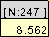
Current Result - Full This displays base components of selected result. X,Y,Z components for vector result. Translational (TX, TY, TZ) and Rotational (RX, RY, RZ) values for six degrees of freedom result. XX,YY,ZZ, XY,YZ,XZ components for tensor result in a matrix form.
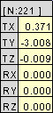
All Results - Table This displays all result values of the probed ID. short cut - Shift + Mouse left button click.
All Instances - Table This displays all instance values of current result for t the probed ID. Short cut - Shift + Mouse left button click.
All Instances - XY Plot This displays XYPlot curve which describes instances vs CAE result values. Short cut - Ctrl + Mouse left button click.
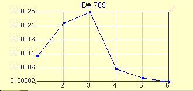
Tracer This displays path of a node traced in transient animation


Note:
User can probe only for current dataset if more than one dataset exists.
Known Issue:
For small geometry or model, user may have problem in probing, VCollab provides a remedy for that problem. User is advised to scale the geometry or model and then start probing. Go down to read how to scale geometry or model.
How to probe CAE results?
Click Probe icon 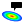 in the tool bar.
Click the down arrow next to the probe icon.
It drops down the list of probe types.
Select a type.
Click on a node to probe current CAE result for the same node.
Notice that CAE value with nodal number is displayed as label in viewer.
Note:
User can show / hide the nodal/element id in probed labels using table context menu item ‘ID’.
Current Result - Derived
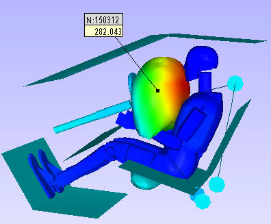
Current Result - Full
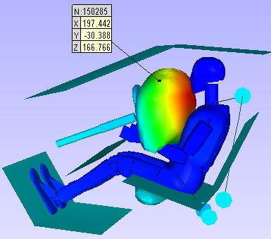
All Results - Table
All Instances-Table
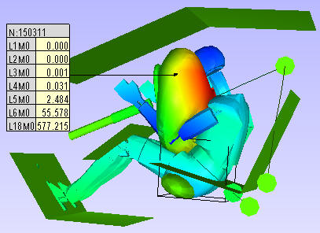
All Instances - XYPlot
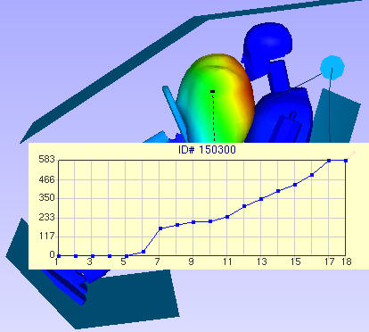
Tracer
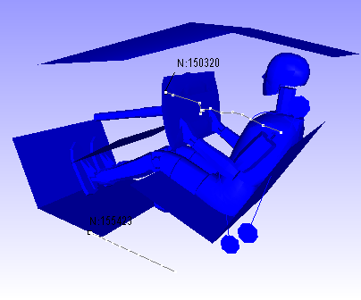

How to probe using nodal or elemental ID?
Click Probe toolbar icon drop down menu.
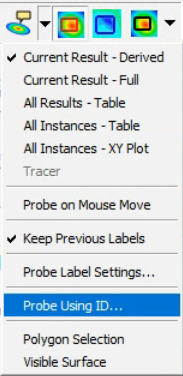
Select ‘Probe Using ID…’ option.
It pops up a dialog for user to enter Node/ Elemental ID.
‘Elemental ID’ option should be checked to enter elemental ID.
Enter an elemental or a node ID.
Click ‘Probe’ button.
ID will be probed and label will be displayed in viewer, only if ID is valid one.
User can enter multiple IDs separated by comma’s. (i.e., “24,78,45,…”).

All Result Table Context Menu
All result table is split into three regions for context menu.
ID Header
This is table header. It contains node or element ID. In case of merging more than one models, this header contains more than one ID and each ID refers to one column in value region.
Row Header
This refers to the model name of the column data. It is useful when comparing multiple models.
Column Header
This refers to list of result names. It contains only abbreviation of results. Here is D is for displacement. User can view the abbreviation table if necessary.
Value Region
This is set of cells and its values corresponds to its column and row header.
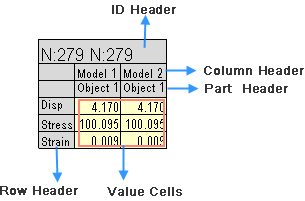
Table Header Context Menu
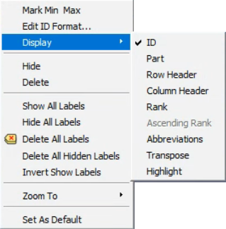
Column or Row header Context Menu

{kind=link}
Value Region Context Menu
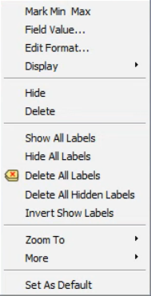
Edit Name |
Allows user to edit Name of the header. |
Edit Format |
Allows user to edit table text and border styles. |
Hide |
Hides the probe tables. User can retrieve labels visibility using Show All labels item in the label toolbar drop down. |
Delete |
Delete the picked label. |
ID |
Shows or hides table header. |
Part |
Displays part name header |
Row Header |
Shows or hides row header. |
Column Header |
Shows or hides column header. |
Zoom To |
Orients the view and zooms in to the label attached position for a better visualization. There are 4 levels of zooms supported. Level 0 is closest to the node or element. |
Add Row |
Adds a new row at the end. |
Add Column |
Adds a new column at the end. |
Insert Row |
Inserts a new row at the mouse cursor position. |
Insert Column |
nserts a new column at the mouse cursor position. |
Delete Row |
Deletes row. |
Delete Column |
Deletes column. |
Set As Default |
Sets current label settings as default to all labels. |
Rank |
Ranks current visible labels and displays rank based on current derived result values. |
Ascending Rank |
Rank option. Ascending if option is checked, descending otherwise. |
Abbreviations |
Displays abbreviation and acronym for results header. |
Transpose |
Transposes label matrix display. |
Highlight |
Highlights the labels based on current result value range, set by user. |
Zoom To option helps to zoom in the nodal vertex region in four levels for better visualization:
Level 0 focuses the element associated with the nodal vertex.
Level 1 focuses nodal vertex with 1/10th of part bounding radius.
Level 2 focuses nodal vertex with 1/4th of part bounding radius.
Level 3 focuses nodal vertex with part bounding radius.
How to scale geometry or parts?
Click ‘Edit | Product Explorer’, which displays the product tree.
Click the group node, not leaf node.
Right mouse click on the node drops down a context menu.
Select ‘Transform’ option.
Check ‘Scale’ option.
Enter the scale factors for each coordinate axis.
Now the model is scaled and is ready for probing.
How to edit or format table?
Double click on the table using left mouse button.
It pops table context menu
Click Edit Name to change the header or result name.
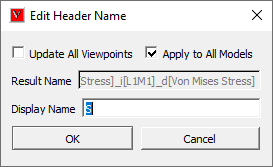
Check ‘Update Viewpoints’ option to update all viewpoint tables.
Enter a name and click OK button.
Click Edit Font to format the table.
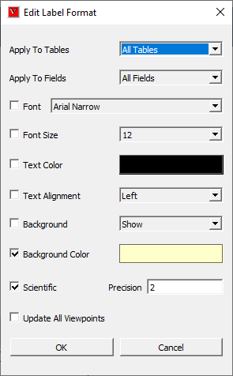
Apply to Tables |
Allows user to set either current table or all tables |
Apply to Fields |
Allows user to set all fields or current field or current column. |
Font |
Allows user to change a font and its size |
Font Size |
Allows user to change a font size. |
Text Color |
Allows user to change text color |
Background |
Allows user to show/hide background |
Background Color |
Allows user to enable/disable background and to select a color. |
Border |
Allows user to show or hide border. |
Border Color |
Allows user to change border color. |
Scientific |
Allows user to set the numerical format for value cells. |
Precision |
Allows user to set the decimal places for value cells. |
Update All ViewPoints |
Allows user to apply and update the modifications to viewpoints too. |
Only the checked options are applicable for modifications.
Make necessary changes and click OK.
User has to select ‘All Tables’ and ‘All Fields’ option to apply the modifications to all viewpoints.
User can apply the modified value to all fields or the column selected or current cell or field.
Click ‘OK’ to apply all modifications.